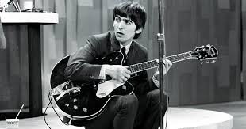
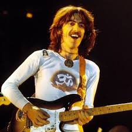
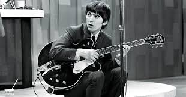
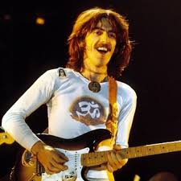

George Harrison
25 February 1943 – 29 November 2001
 




Bio
George Harrison was an English guitarist, singer, songwriter, and music and film producer who achieved international fame as the lead guitarist of the Beatles.
His songs for the group included "Taxman", "Within You Without You", "While My Guitar Gently Weeps", "Here Comes the Sun" and "Something", the last of which became the Beatles' second-most covered song.
For more information, click here: https://en.wikipedia.org/wiki/George_Harrison
Click the button to find out interesting facts about this artist!
When you've seen beyond yourself, then you may find, peace of mind is waiting there.
George Harrison
"All Things Must Pass" (lyrics and audio)
Sunrise doesn't last all morning
A cloudburst doesn't last all day
Seems my love is up and has left you with no warning
It's not always going to be this grey
All things must pass
All things must pass away
Sunset doesn't last all evening
A mind can blow those clouds away
After all this, my love is up and must be leaving
It's not always going to be this grey
All things must pass
All things must pass away
All things must pass
None of life's strings can last
So, I must be on my way
And face another day
Now the darkness only stays the night-time
In the morning it will fade away
Daylight is good at arriving at the right time
It's not always going to be this grey